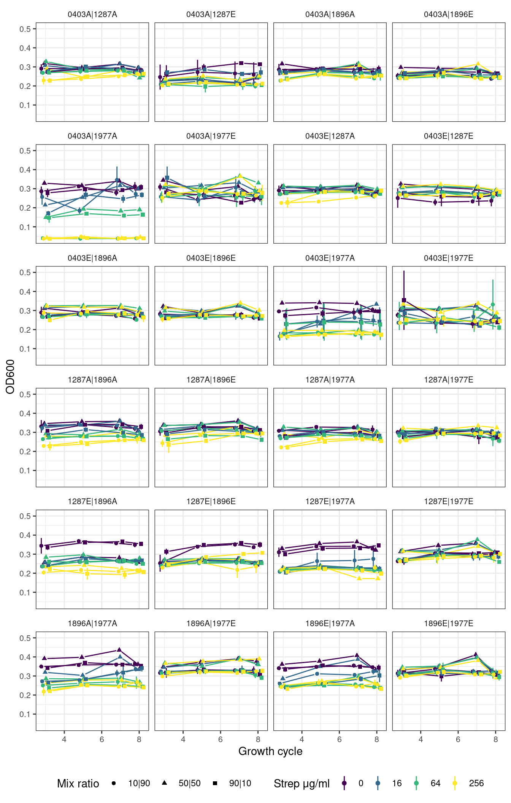
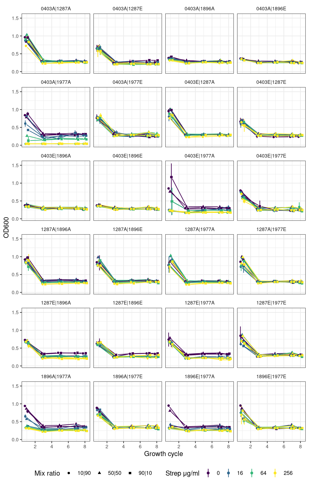
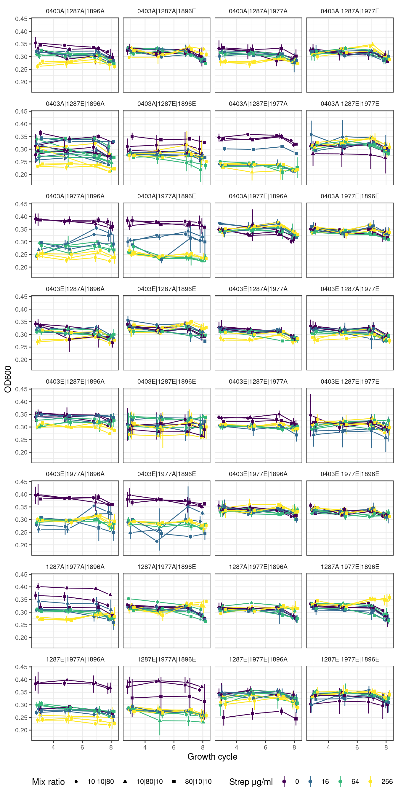
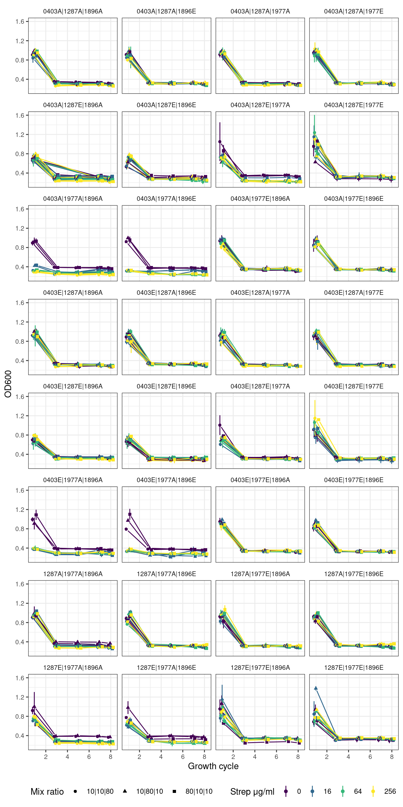
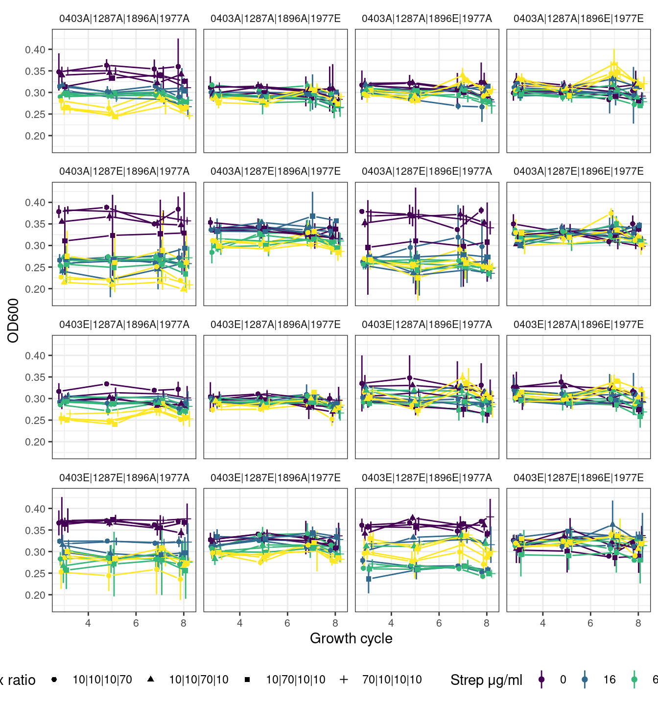
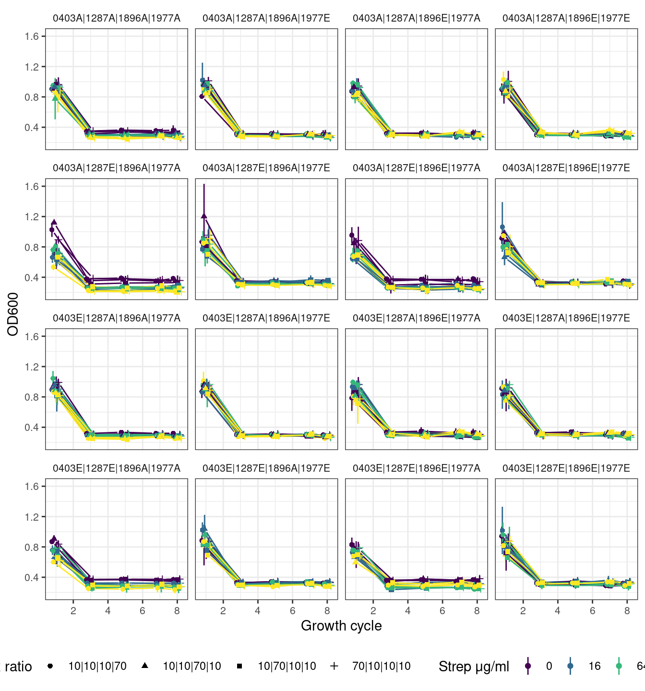
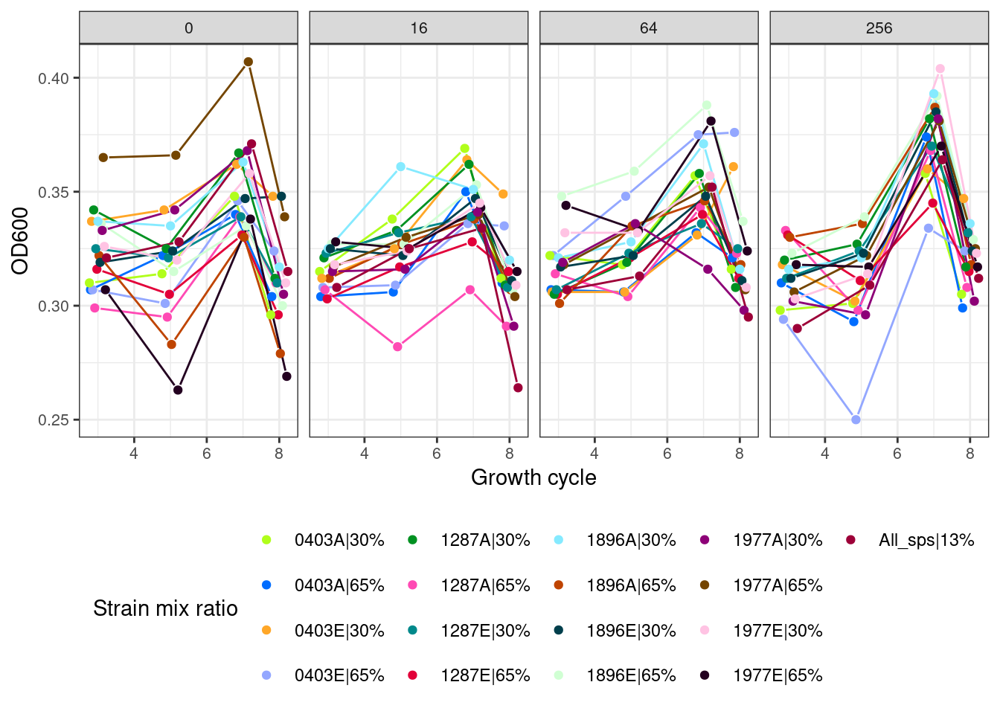
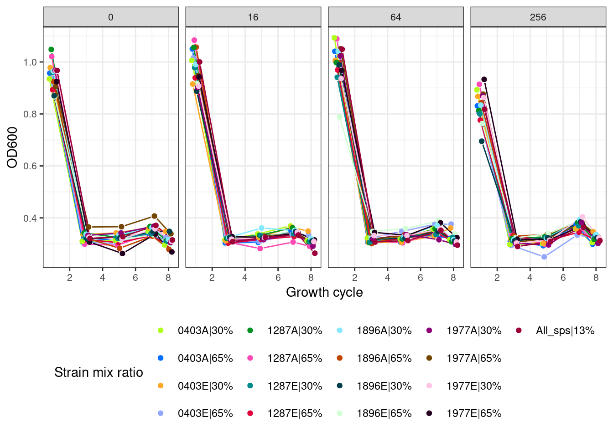

Formatting and plotting optical density data
Abstract
In the main experiment, species pairs, trios, or quartets were serially passaged every 48 hours to fresh media containing the necessary concentration of streptomycin. The experiment was terminated after 8 of these growth cycles (16 days). The optical density (600 nm) was measured on alternating serial passage/growth cycles. This notebook contains results/plots for the optical density data.
1 Setup
1.1 Libraries
1.2 Global variables
1.3 Read optical density data
Show/hide code
pairs <- readr::read_tsv(here::here(data_raw, "20240606_pairs", "optical_density_formatted.tsv"))
tqs <- readr::read_tsv(here::here(data_raw, "20240829_tqs", "optical_density_formatted.tsv")) %>%
mutate(well = paste0(str_extract(well, "[A-H]"),
str_pad(str_extract(well, "\\d+"), 2, side = "left", pad = "0")))
pairseights <- readr::read_tsv(here::here(data_raw, "20250425_8sp_5050pairs", "optical_density_formatted.tsv")) %>%
mutate(sample2 = case_when(str_detect(sample, "com_") ~ paste0("8", str_extract(sample, "_\\d+$")),
str_detect(sample, "^3_p") ~ paste0("3_c01_", str_extract(well, "[:upper:]"), str_pad(str_extract(well, "\\d+"), 2, "left", pad = "0")),
str_detect(sample, "^p") ~ str_to_upper(sample)))1.4 Read and format community information
Show/hide code
pairs_comp <- readr::read_tsv(here::here("data", "communities", "experiment_design", "pairs_sample_composition.tsv")) %>%
dplyr::mutate(name = paste(str_to_upper(evo_hist), str_remove(strainID, "HAMBI_"), target_f*100, sep = "_")) %>%
dplyr::select(community_id, name) %>%
dplyr::group_by(community_id) %>%
dplyr::mutate(id = 1:n()) %>%
dplyr::ungroup() %>%
tidyr::pivot_wider(names_from = id, values_from = name ) %>%
dplyr::rename(a = `1`, b = `2`) %>%
mutate(a_sp = paste0(str_split_i(a, "_", 2), stringr::str_extract(str_split_i(a, "_", 1), "^.{1}")),
b_sp = paste0(str_split_i(b, "_", 2), stringr::str_extract(str_split_i(b, "_", 1), "^.{1}")),
a_f = str_split_i(a, "_", 3),
b_f = str_split_i(b, "_", 3)) %>%
arrange(community_id) %>%
mutate(n_species = 2,
sp = paste(a_sp, b_sp, sep = "|"),
fr = paste(a_f, b_f, sep = "|"))Rows: 96 Columns: 4
── Column specification ────────────────────────────────────────────────────────
Delimiter: "\t"
chr (3): community_id, evo_hist, strainID
dbl (1): target_f
ℹ Use `spec()` to retrieve the full column specification for this data.
ℹ Specify the column types or set `show_col_types = FALSE` to quiet this message.Show/hide code
Rows: 96 Columns: 11
── Column specification ────────────────────────────────────────────────────────
Delimiter: "\t"
chr (7): well, a, a_sp, b, b_sp, c, c_sp
dbl (4): microcosm_id, a_f, b_f, c_f
ℹ Use `spec()` to retrieve the full column specification for this data.
ℹ Specify the column types or set `show_col_types = FALSE` to quiet this message.Show/hide code
Rows: 64 Columns: 14
── Column specification ────────────────────────────────────────────────────────
Delimiter: "\t"
chr (9): well, a, a_sp, b, b_sp, c, c_sp, d, d_sp
dbl (5): microcosm_id, a_f, b_f, c_f, d_f
ℹ Use `spec()` to retrieve the full column specification for this data.
ℹ Specify the column types or set `show_col_types = FALSE` to quiet this message.This processes the final experiment with 8 species
Show/hide code
pairstrios_comp <- readr::read_tsv(here::here("_data_raw", "communities", "20250502_BTK_illumina_v3", "sample_compositions.tsv")) %>%
# focus on pairs and trios first
filter(!str_detect(sample, "^8_")) %>%
dplyr::mutate(name = paste(str_to_upper(evo_hist), str_remove(strainID, "HAMBI_"), target_f*100, sep = "_")) %>%
dplyr::select(sample, name) %>%
dplyr::group_by(sample) %>%
dplyr::mutate(id = 1:n()) %>%
dplyr::ungroup() %>%
tidyr::pivot_wider(names_from = id, values_from = name) %>%
dplyr::rename(a = `1`, b = `2`, c = `3`) %>%
mutate(a_sp = paste0(str_split_i(a, "_", 2), stringr::str_extract(str_split_i(a, "_", 1), "^.{1}")),
b_sp = paste0(str_split_i(b, "_", 2), stringr::str_extract(str_split_i(b, "_", 1), "^.{1}")),
c_sp = paste0(str_split_i(c, "_", 2), stringr::str_extract(str_split_i(c, "_", 1), "^.{1}")),
a_f = str_split_i(a, "_", 3),
b_f = str_split_i(b, "_", 3),
c_f = str_split_i(c, "_", 3)
) %>%
arrange(sample)Rows: 947 Columns: 4
── Column specification ────────────────────────────────────────────────────────
Delimiter: "\t"
chr (3): sample, evo_hist, strainID
dbl (1): target_f
ℹ Use `spec()` to retrieve the full column specification for this data.
ℹ Specify the column types or set `show_col_types = FALSE` to quiet this message.Show/hide code
pairs_comp02 <- pairstrios_comp %>%
filter(str_detect(sample, "^2")) %>%
select(sample, a, b, a_sp, b_sp, a_f, b_f) %>%
mutate(n_species = 2,
sp = paste(a_sp, b_sp, sep = "|"),
fr = paste(a_f, b_f, sep = "|")) %>%
filter(!str_detect(sample, "_[A-Z]\\d+$")) %>%
mutate(sample2 = paste0("P", str_extract(sample, "\\d+$")))
trios_comp02 <- pairstrios_comp %>%
filter(str_detect(sample, "^3")) %>%
select(sample, a, b, c, a_sp, b_sp, c_sp, a_f, b_f, c_f) %>%
mutate(n_species = 3,
sp = paste(a_sp, b_sp, c_sp, sep = "|"),
fr = paste(a_f, b_f, c_f, sep = "|"))1.5 Subset to pairs, trios, and quartets
Also we take the mean and std dev for the 2 replicates of each condition
Show/hide code
pairs_combo <- left_join(pairs_comp, pairs, by = join_by(community_id, n_species)) %>%
summarize(OD_mn = mean(OD),
OD_sd = sd(OD),
.by = c(sp, fr, transfers, strep_conc)) %>%
mutate(strep_conc = as.factor(strep_conc))
trios_combo <- left_join(trios_comp, tqs, by = join_by(well, n_species)) %>%
summarize(OD_mn = mean(OD),
OD_sd = sd(OD),
.by = c(sp, fr, transfers, strep_conc)) %>%
mutate(strep_conc = as.factor(strep_conc))
quart_combo <- left_join(quart_comp, tqs, by = join_by(well, n_species)) %>%
summarize(OD_mn = mean(OD),
OD_sd = sd(OD),
.by = c(sp, fr, transfers, strep_conc)) %>%
mutate(strep_conc = as.factor(strep_conc))Need to tack on the pairs, trios, and 8s from the latest experiment
Show/hide code
pairs_combo_f <- left_join(pairs_comp02, pairseights, by = join_by(n_species, sample2)) %>%
summarize(OD_mn = mean(OD),
OD_sd = sd(OD),
.by = c(sp, fr, transfers, strep_conc)) %>%
mutate(strep_conc = as.factor(strep_conc)) %>%
bind_rows(pairs_combo) %>%
mutate(OD_sd = if_else(is.na(OD_sd), 0, OD_sd))
trios_combo_f <- left_join(trios_comp02, pairseights, by = join_by(n_species, sample==sample2)) %>%
summarize(OD_mn = mean(OD),
OD_sd = sd(OD),
.by = c(sp, fr, transfers, strep_conc)) %>%
mutate(strep_conc = as.factor(strep_conc)) %>%
bind_rows(trios_combo) %>%
drop_na() %>%
mutate(OD_sd = if_else(is.na(OD_sd), 0, OD_sd))1.6 Subset Octets
Some special formatting here for Octets
Show/hide code
eights_combo_f <- readr::read_tsv(here::here("_data_raw", "communities", "20250502_BTK_illumina_v3", "sample_compositions.tsv")) %>%
filter(str_detect(sample, "^8_")) %>%
dplyr::mutate(name = paste0(str_remove(strainID, "HAMBI_"), str_to_upper(str_sub(evo_hist, 0, 1)), "|", target_f*100,"%")) %>%
group_by(sample) %>%
filter(target_f == max(target_f)) %>%
mutate(n = n()) %>%
slice(1) %>%
mutate(name = if_else(n == 8, "All_sps|13%", name)) %>%
select(sample, name) %>%
left_join(pairseights, by = join_by(sample==sample2)) %>%
drop_na() %>%
dplyr::select(sample, name, transfers, n_species, strep_conc, OD)Rows: 947 Columns: 4
── Column specification ────────────────────────────────────────────────────────
Delimiter: "\t"
chr (3): sample, evo_hist, strainID
dbl (1): target_f
ℹ Use `spec()` to retrieve the full column specification for this data.
ℹ Specify the column types or set `show_col_types = FALSE` to quiet this message.2 Plotting optical density
Here we will plot optical density over the batch growth cycles. For ease of visualization we exclude the first transfer because the OD was very high, and this happened in all conditions. We focus on the subsequent transfers because the OD has mostly stabilized after the first growth cycle.
2.1 Plotting functions
Show/hide code
plot_od_grid <- function(df, remove_first_cycle = TRUE, ncol){
pj <- ggplot2::position_jitterdodge(jitter.width=0.0,
jitter.height = 0.0,
dodge.width = 0.5,
seed=9)
df %>%
dplyr::filter(if(remove_first_cycle) transfers > 2 else transfers > 0) %>%
ggplot2::ggplot(aes(x = transfers, y = OD_mn, color = strep_conc, group = interaction(strep_conc, fr))) +
ggplot2::geom_linerange(aes(ymin = OD_mn - OD_sd, ymax = OD_mn + OD_sd, color = strep_conc), position = pj) +
ggh4x::geom_pointpath(aes(shape = fr), position = pj, mult = 0.2) +
#ggplot2::geom_point() +
#ggplot2::geom_line(aes(linetype = f)) +
ggplot2::facet_wrap(~sp, ncol = ncol) +
ggplot2::labs(x = "Growth cycle", y = "OD600", color = "Strep μg/ml", shape = "Mix ratio") +
ggplot2::scale_color_viridis_d() +
ggplot2::theme_bw() +
ggplot2::theme(strip.background = element_blank(),
legend.position = "bottom",
axis.text = element_text(size = 8),
strip.text = element_text(size = 8))
}
# Special Octets plotting function
plot_od_octets <- function(df, remove_first_cycle = TRUE, ncol){
cols <- c("#b0fe1b","#006dff","#ffa728","#93a7ff",
"#009121","#ff4ab4","#00898b","#e20039",
"#85eaff","#bf4400","#003f4c","#d0ffd3",
"#8d0077","#744500","#ffc3e3","#230020",
"#9d0038")
pj <- ggplot2::position_jitterdodge(jitter.width=0.0,
jitter.height = 0.0,
dodge.width = 0.5,
seed=9)
df %>%
dplyr::filter(if(remove_first_cycle) transfers > 2 else transfers > 0) %>%
ggplot2::ggplot(aes(x = transfers, y = OD, color = name, group = interaction(strep_conc, name))) +
ggh4x::geom_pointpath(position = pj, mult = 0.2) +
ggplot2::facet_wrap(~strep_conc, ncol = ncol) +
ggplot2::labs(x = "Growth cycle", y = "OD600", color = "Strain mix ratio") +
ggplot2::scale_colour_manual(values = cols) +
ggplot2::theme_bw() +
ggplot2::theme(
#strip.background = element_blank(),
legend.position = "bottom",
axis.text = element_text(size = 8),
strip.text = element_text(size = 8))
}2.2 Pairs
Show/hide code
fig_pairs <- plot_od_grid(pairs_combo_f, remove_first_cycle = TRUE, ncol = 4)
# ggsave(
# here::here("figs", ".svg"),
# fig01,
# width = 7,
# height = 12,
# units = "in",
# device = "svg"
# )
#
# ggsave(
# here::here("figs", ".png"),
# fig01,
# width = 7,
# height = 12,
# units = "in",
# device = "png"
# )2.2.1 Pairs without first growth cycle

2.2.2 Pairs with first growth cycle

2.3 Trios
Show/hide code
fig_trios <- plot_od_grid(trios_combo_f, remove_first_cycle = TRUE, ncol = 4)
# ggsave(
# here::here("figs", ".svg"),
# fig01,
# width = 7,
# height = 12,
# units = "in",
# device = "svg"
# )
#
# ggsave(
# here::here("figs", ".png"),
# fig01,
# width = 7,
# height = 12,
# units = "in",
# device = "png"
# )2.3.1 Trios without first growth cycle

2.3.2 Trios with first growth cycle

2.4 Quartets
Show/hide code
fig_quarts <- plot_od_grid(quart_combo, remove_first_cycle = TRUE, ncol = 4)
# ggsave(
# here::here("figs", ".svg"),
# fig01,
# width = 7,
# height = 12,
# units = "in",
# device = "svg"
# )
#
# ggsave(
# here::here("figs", ".png"),
# fig01,
# width = 7,
# height = 12,
# units = "in",
# device = "png"
# )2.4.1 Quartets without first growth cycle

2.4.2 Quartets with first growth cycle

2.5 Octets (all strains of all species)
2.5.1 Octets without first growth cycle

2.5.2 Octets with first growth cycle
